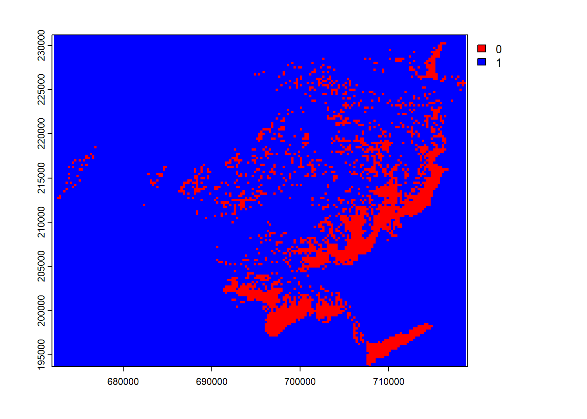
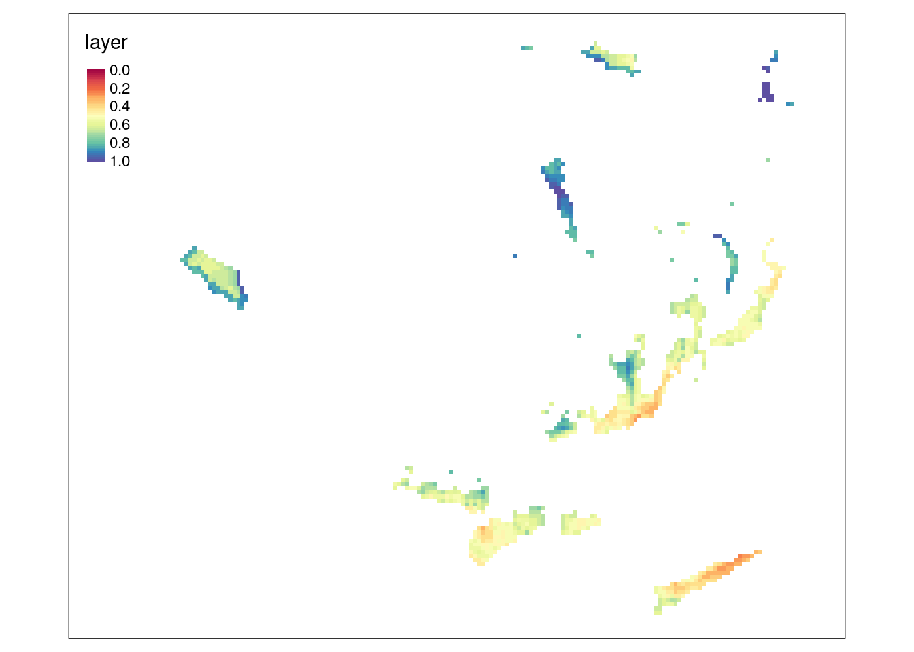
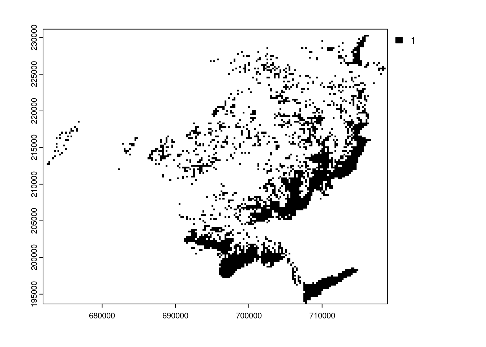
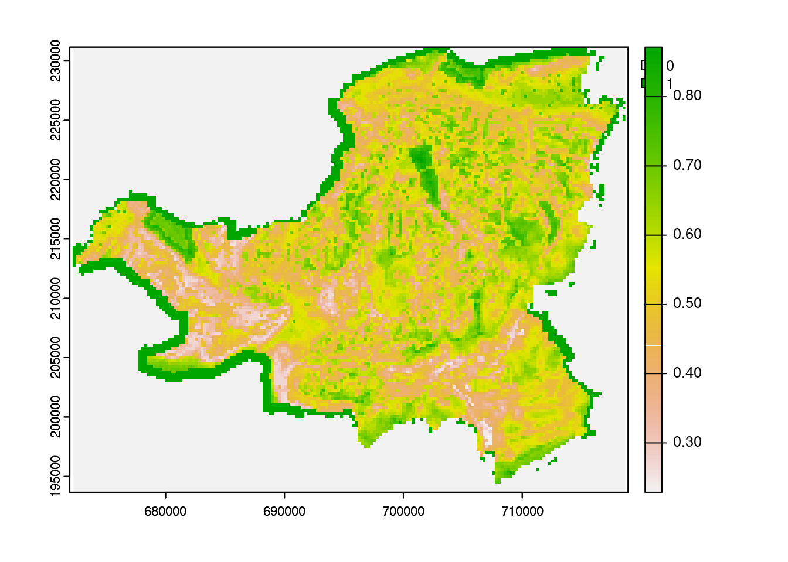

Rauman 5: Übung B
In der letzten Übung (Übung A) haben wir die potentielle Standorte für Windkraftanalgen hinsichtlich vierer Distanzkriterien bewertet. In dieser Übung (Übung B) schliessen wir die Multikriterien-Evaluation ab, in dem wir:
- Folgende Kriterien mitberücksichtigen: Windgeschwindigkeit, Vereisungshäufigkeit und Hangneigung
- Die Ausschlusskriterien vom Resultat ausschliessen
Für Punkt 1 müssen wir zusätzliche Daten einlesen, die im Rasterformat daherkommen. Punkt 2 beruht im Wesentlichen auf Daten, die wir bereits verwendet haben.
Übung 1: Rasterdaten einlesen
Zur Bewertung der Standorte Hinsichtlich Windgeschwindigkeit und Vereisungshäufigkeit stehen uns folgende Rasterdatensätze zur Verfügung. Lade die beiden nachfolgenden Datensätze herunter und mit der Funktion rast() in R ein.
- eis250m.tif (Vereisungshäufigkeit in Tage/Jahr)
- wind250m.tif (Durchschnittliche Windgeschwindigkeit)
Explorieren Sie die Daten visuell und versuchen Sie ein Verständnis für die Datensätze zu bekommen.
Übung 2: Wind und Eis bewerten
Diese Rasterdaten müssen wir nicht weiter verarbeiten, ausser sie zu bewerten. Führen Sie diese Bewertung aufgrund nachstehender Tabelle durch. Nutzen Sie dafür die Funktion classify() analog Kapitel 57.3.
Windgeschwindigkeit |
Vereisungshaeufigkeit |
Hangneigung |
|||
|---|---|---|---|---|---|
| Speed | Score | Days | Score | Slope | Score |
| 0-35 | 0.0 | 60-365 | 0.0 | 20-90 | 0.0 |
| 35-40 | 0.1 | 54-60 | 0.1 | 18-20 | 0.1 |
| 40-45 | 0.2 | 48-54 | 0.2 | 16-18 | 0.2 |
| 45-50 | 0.3 | 42-48 | 0.3 | 14-16 | 0.3 |
| 50-55 | 0.4 | 36-42 | 0.4 | 12-14 | 0.4 |
| 55-60 | 0.5 | 30-36 | 0.5 | 10-12 | 0.5 |
| 60-65 | 0.6 | 24-30 | 0.6 | 8-10 | 0.6 |
| 65-70 | 0.7 | 18-24 | 0.7 | 6-8 | 0.7 |
| 70-75 | 0.8 | 12-18 | 0.8 | 4-6 | 0.8 |
| 75-80 | 0.9 | 6-12 | 0.9 | 2-4 | 0.9 |
| 80-Inf | 1.0 | 0-6 | 1.0 | 0-250 | 1.0 |
Übung 3: Slope berechnen und Bewerten
Für die Berechnung und anschilessende Bewertung der Hangneigung brauchen wir ein Höhenmodell. Lade das Höhenmodell, was wir bereits in Kapitel 56 verwendet haben (dhm250m.tif) in R ein, und berechne Anschliessend die Hangneigung mit der Funktion terrain() analog Kapitel 56.1 (beachten Sie die Einheit des Output!).
Bewerten Sie die Hangneigung danach gemäss Tabelle Tabelle 58.1.
Übung 4: Raster Overlay
Analog Kapitel 57.4 können wir an dieser Stelle eine vorläufige Beurteilung der Gebiete durchführen. Hier stossen wir aber auf ein Problem. Sobald wir versuchen, Bewertungen aus Übung A mit bewertungen aus dieser Übung (Übung B) miteinander zu verrechnen, erhalten wir folgende Fehlermeldung:
Error: [+] SRS do not matchSRS do not match soll heissen, dass die Koordinatenbezugssysteme (CRS) der verschiedenen Raster nicht überein stimmen. Wenn wir die CRS der verschiedenen Datensätze aber anschauen, sehen wir, dass es sich eigentlich um die gleichen CRS handelt.
crs(strassen_classify, describe = TRUE) # Datensatz aus Übung A name authority code area
1 CH1903 / LV03 EPSG 21781 Europe - Liechtenstein and Switzerland
extent
1 5.96, 10.49, 47.81, 45.82crs(wind_classify, describe = TRUE) # Datensatz aus Übung B name authority code area extent
1 CH1903 / LV03 <NA> <NA> <NA> NA, NA, NA, NADas Problem ist, dass diese in den beiden Datensätzen leicht anders abgespeichert sind. Wir können das Problem lösen, indem wir den CRS aus dem einen Raster mit dem CRS des anderen Rasters wie folgt überschreiben:
crs(wind_classify) <- crs(strassen_classify)
crs(eis_classify) <- crs(strassen_classify)
crs(neigung_classify) <- crs(strassen_classify)Nun sollte der Overlay problemlos funktionieren. Führe einen Overlay mit allen verfügbaren Parameter (Bewertung der Distanz zu Strassen, Siedlung, Wald und Schutzgebiete sowie Wind, Eis und Neigung) durch und visualisiere das Resultat.

Übung 5: Ausschlusskriterien
Als Auschlussgebiete gelten Flächen, wo keine Windkraftanlagen gebaut werden können. Dazu gehören bewohnte Flächen, nationale Schutzgebiete, Waldgebiete und Seen. Zwar werden bewohnte Flächen, nationale Schutzgebiete und Waldgebiete in unserer Analyse bereits schlecht (mit “0”) bewertet, aber nicht kategorisch vom Resultat ausgeschlossen. Sprich: Wenn ein Gebiet, welches zum Beispiel mitten im Siedlungsgebiet liegt, alle anderen Bedigungen erfüllt, kann es trotzdem eine hohe Bewertung erhalten, obwohl dort keine Windkraftanalage gebaut werden kann.
Um diese Gebiete kategorisch vom Resultat auszuschliessen können wir für die Siedlungsgebiete, Schutzgebiete sowie den Wald die rasterisierte Form verwenden, die wir in Kapitel 57.2 erstellt haben. Für die Seen müssen wir den entsprechenden Raster zuerst noch erstellen:
# Fehlendes Ausschlussgebiet Rasterisieren
seen_raster <- rasterize(seen, template)Diese Rasterdatensätze sind bereits binär: Rasterzellen mit dem Wert 1 sind Zellen im Wald, im Schutzgebiet usw. Zellen ausserhalb sind NA. Um die Vereinigungsmenge zu erhalten (also alle Zellen , die entweder Sieldungsgebiet oder Wald oder Schutzgebiet oder Seen sind), können wir die Funktion any() verwenden. Diese Funktion gibt TRUE zurück wenn mindestens 1 Wert im Overlay TRUE ist.
Hilfreich ist an dieser Stelle, wenn wir die Gemeindegrenze vom Kanton Schwyz ebenfalls rasterisieren und mitbenutzen, damit Gebiete ausserhalb des Kantons als Auschlussgebiete gelten (background = 1) und Gebiete innerhalb des Kantons nicht zwingend (field = 0).
kt_schwyz_raster <- rasterize(kt_schwyz, template, field = 0, background = 1)
# Summe aller Auschlussgebiete rechnen
# (na.rm = TRUE ignoriert NA Werte bei Summenbildung)
ausschlussgebiete <- any(siedlungsgebiet_raster, schutzgebiete_raster, wald_raster, seen_raster, kt_schwyz_raster, na.rm = TRUE)
plot(ausschlussgebiete, col = c("red", "blue"))
Übung 5: Ausschlussgebiete von potenziellen Gebieten entfernen
Das Resultat aus unserer vorläufigen Analyse (Abbildung 58.1) weisst werte von 0 - 1 auf. Um sicher zu stellen, dass die Auschlussgebiete mit 0 ausgewiesen werden können wie folgt vorgehen:
- Wir erstellen einen neuen Raster
einschlussgebiete, welches das Gegenteil vonausschlussgebietedarstellt.
einschlussgebiete <- !ausschlussgebiete
plot(einschlussgebiete, col = c("red", "blue"))
- Jetzt entsprechen alle Zellen, die vom Resultat ausgeschlossen werden sollten, dem Wert
0. Diese ersetzen wir nun mitNA.
einschlussgebiete[einschlussgebiete == 0] <- NA
plot(einschlussgebiete, col = "black")
Diesen Raster multiplizieren wir mit dem Resultat aus Abbildung 58.1. Da jeder Wert, der mit NA multipliziert NA ergibt, werden so auszuschliessende Gebiete mit NA bewertet. Einzuschliessende Gebiete behalten ihren Wert, da sie lediglich mit 1 multipliziert werden.
Führe diesen letzten Schritt durch und visualisiere anschliessend das Ergebnis.
